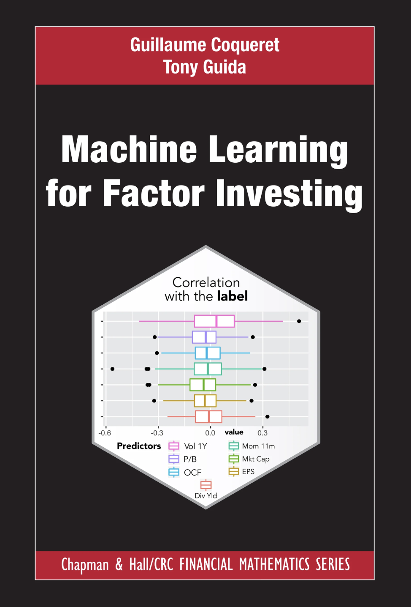

本书旨在涵盖一些应用于基于 公司特征 的股票 投资策略 的高级建模技术。内容有三重。首先，我们尝试简单解释股权资产配置中使用的大多数主流机器学习算法背后的想法。其次，我们为希望进一步深入的读者提供了广泛的学术参考资料。最后，我们提供了实用的 R 代码示例，展示了如何在现实数据集上应用概念和工具，我们分享这些代码示例是为了鼓励 可复现性。
印刷版 R 可以在出版商网站上购买 在亚马逊（美国） 或 、 在亚马逊（法国） 和 亚马逊（英国）。
Python 版本即将推出，可在 Amazon（美国） 上预订。
本书介绍机器学习工具及其在因子投资中的应用。因子投资是一个涵盖资产配置、量化交易和财富管理的大领域的子领域。其前提是，公司收益率的差异可以通过这些企业的特征来解释。因此，它不同于仅依赖价格和交易量数据的传统分析，例如 Markowitz (1952) 的经典投资组合理论或高频交易。对于金融领域机器学习的一般和广泛的处理，我们推荐 Matthew F. Dixon, Halperin, and Bilokon (2020)。
我们讨论的主题与专著中未涵盖的其他主题相关。这些主题包括：
谁应该读这本书？本书面向两类读者。首先，研究生，希望以投资和资产管理为目标攻读量化金融专业。第二个目标群体是来自资金管理行业的专业人士，他们要么寻求转向基于机器学习的分配方法，要么只是对这些新工具感兴趣并希望升级他们的能力。在较小程度上，本书可以为需要一本包含有关最近的资产定价问题和应用于资金管理的机器学习算法的广泛参考文献的学者或研究人员提供服务。虽然本书涵盖了大多数常见方法，但它还展示了如何实现更奇特的模型，例如因果图（第 14 章）、贝叶斯加性树（第 9 章）和混合自动编码器（第 7 章）。
本书假定您具备 代数（矩阵操作）、分析（函数微分、梯度）、优化（一阶和二阶条件、对偶形式）和 统计（分布、矩、检验、简单的估计方法，如最大似然）。还需要最低限度的金融文化：本书不会定义股票、会计数量（例如账面价值）等简单概念。最后，所有示例和插图均使用 R 进行编码。最少的语言文化足以理解严重依赖 tidyverse（Wickham et al. (2019)、www.tidyverse.org）和管道（Bache and Wickham (2014)、Mailund (2019)）最常见特征的代码片段。
本书分为四个部分。
第一部分收集准备材料，并从记号与数据呈现开始（第 1 章），然后是引言性说明（第 2 章）。 3 章概述了因子投资的经济基础（理论和实证），并简要总结了近期的专门文献。 4 章涉及数据准备。它快速回顾基本技巧并警告一些重大问题。
本书的第二部分致力于监督学习中的预测算法。这些是用于预测金融数量（收益率、波动性、夏普比率等）的最常用工具。它们的范围从惩罚回归（5 章）到树方法（6 章），涵盖神经网络（7 章）、支持向量机（8 章）和贝叶斯方法（9 章）。
本书的下一部分将弥合这些工具及其在金融领域的应用之间的差距。 10 章详细介绍了如何评估和改进预先定义的 ML 引擎。 11 章解释了如何组合模型，以及为什么这可能不是一个好主意。最后，最重要的一章（12 章）回顾了投资组合回测的关键步骤，并提到了此阶段经常遇到的常见错误。
本书的结尾更具体地涵盖了与机器学习相关的一系列高级主题。第一个是 可解释性 。机器学习模型通常被认为是黑匣子，这引发了信任问题：人们应该如何以及为何信任基于机器学习的预测？ 13 章旨在介绍有助于理解幕后情况的方法。 14 章重点介绍 因果性，它既是一个比相关性更强大的概念，也是人工智能 (AI) 领域最近许多讨论的核心。大多数机器学习工具都依赖于类似相关的模式，因此强调与因果关系相关的技术的好处非常重要。最后，15 和 16 章专门讨论非监督方法。后者可能有用，但它们的金融应用应该明智而谨慎地推动。
本书可在 http://www.mlfactor.com 上完整获取。重要的是，不仅本书的内容易于访问，而且各章节中使用的数据和代码也易于访问。您可以在 https://github.com/shokru/mlfactor.github.io/tree/master/material 找到它们。本书的在线版本将在印刷版出版后进行更新。
人们普遍认为，Python 作为 最 主导 ML 编程语言的霸主地位。这是因为几乎所有深度学习应用程序（截至 2020 年，深度学习是机器学习最流行的分支之一）都是通过 TensorFlow 或 PyTorch 用 Python 进行编码。 事实上，R 还提供 很多。首先，我们不要忘记，机器学习领域最有影响力的教科书之一 (Hastie, Tibshirani, and Friedman (2009)) 是由使用 R 编写代码的统计学家编写的。此外，许多面向统计的算法（例如 9.5 节中的 BART）主要使用 R 编写，并不总是使用 Python 编写。一般而言，贝叶斯包 (https://cran.r-project.org/web/views/Bayesian.html) 以及特别是贝叶斯学习中的 R 产品可能是无与伦比的。
目前 R 中有多种可用的 ML 框架。
此外，通过 reticulate 包，也可以（但并不总是容易）使用 Python 工具。最突出的例子是将 TensorFlow 和 keras 库改编为 R。因此，R 用户可以轻松获得一些非常先进的 Python 材料。对于其他资源也是如此，例如斯坦福大学的 CoreNLP 库（Java 语言），它在 coreNLP 包中被移植到 R（我们在本书中不会使用它）。
这本书的目的之一是提出一个关于金融预测和投资组合选择中的机器学习应用的大规模教程。因此，一个关键字是 可复现性！为了复制我们的结果（在某些学习算法中可能存在随机性），您需要在计算机上运行 R 和 RStudio 版本。学习 R 的最佳书籍通常也可以在线免费获取。可以在此处找到简短列表 https://rstudio.com/resources/books/。R for Data Science 专著 可能是最重要的。
在编码要求方面，我们严重依赖tidyverse，它是包（或库）的集合。我们最常用的三个包是 dplyr，它实现简单的数据操作（过滤、选择、排列）；tidyr，它以整洁的方式格式化数据；ggplot，用于图形输出。
我们使用的软件包列表可以在下面的表 0.1 中找到。带星号 \(*\) 的软件包需要通过 bioconductor 安装2。带加号 \(^+\) 的软件包需要手动安装3。
在所有这些软件包（或其集合）中，tidyverse 和 lubridate 在本书的几乎所有章节中都是必修的。要在 R 中安装新包，只需键入
install.packages(“包名”)
在控制台中。有时，由于函数名称冲突（特别是与 select() 函数），我们使用语法 package::function() 来确保函数调用来自正确的源。用于汇集本书的软件包的确切版本列在本书的 GitHub 网页 https://github.com/shokru/mlfactor.github.io 上的“renv.lock”文件中。一个小注释如下：虽然 dplyr 包中的函数 gather() 和 spread() 已被 pivot_longer() 取代， pivot_wider()，我们仍然使用它们，因为它们的语法更加紧凑。
我们尽可能地创建了简短的 代码块，并在我们认为有用的时候对每一行进行了注释。注释显示在行的末尾，前面有一个标签 #。
这本书被构造为一个非常大的笔记本，因此结果通常显示在代码块下面。它们可以是图表或表格。有时，它们是简单的数字，前面有两个主题标签##。下面的示例说明了这种格式。
1+2 # Example
## [1] 3
这本书可以看作是一本非常大的教程。因此，大多数块依赖于先前定义的变量。复制部分代码（通过在线代码）时，请确保 环境包含所有相关变量 。一种最佳实践是始终从运行 1 章中的所有代码块开始。对于练习，我们经常使用相应章节中创建的变量。
本书的核心内容是为作者之一于 2019 年春季为法国里昂商学院和帝国理工学院商学院金融硕士学生举办的一系列讲座而准备的。我们感谢那些提出富有成效的问题并为完善本书内容做出贡献的学生。
我们感谢 Bertrand Tavin 和 Gautier Marti 对本书的彻底筛选。我们还要感谢 Eric André、Aurélie Brossard、Alban Cousin、Frédérique Girod、Philippe Huber、Jean-Michel Maeso、Javier Nogales 以及友好的评论； Christophe Dervieux 帮助预订； Mislav Sagovac 和 Vu Tran 的早期反馈；约翰·金梅尔（John Kimmel）让这一切成为现实，乔纳森·雷根斯坦（Jonathan Regenstein）无论话题如何，都随时愿意参与。最后，我们感谢我们的原编辑约翰收集的匿名评论。
机器学习与因子投资是两个巨大的研究领域，两者之间的重叠也相当大，并且发展迅速。这本书的内容永远会构成坚实的背景，但它自然注定会过时。此外，通过构建，一些子主题和许多参考文献将逃脱我们的审查。我们的目的是逐步改进本书的内容，并根据最新的正在进行的研究进行更新。我们将感谢任何有助于纠正或更新专著的评论。感谢您直接（通过拉取请求）在本书的网站（托管在 https://github.com/shokru/mlfactor.github.io）上发送反馈。